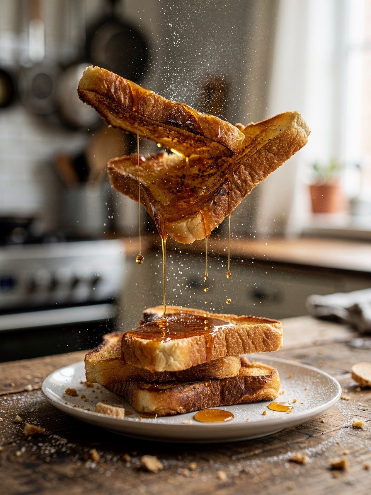

French Toast!

Description
French toast is sweet treat to start your day! So much variety can be added to the toppings. Feel free to try fresh fruit, pecans or whipped cream!
Ingredients
- 1/4 cup milk
- 1 cup milk
- 3 large eggs
- 1 tablespoon white sugar
- 1 teaspoon vanilla extract
- 1/2 teaspoon ground cinnamon
- 1 pinch salt
- 12 (3/4 to 1-inch thick) slices of bread
Steps
- Gather all ingredients.
- Place flour into a large mixing bowl; slowly whisk in milk until smooth. Whisk in eggs, sugar, vanilla, cinnamon, and salt until well combined.
- Heat a lightly oiled griddle or frying pan over medium heat. Meanwhile, soak bread slices in milk mixture until saturated.
- Working in batches, cook bread on the preheated griddle or pan until golden brown on both sides, about 2 minutes per side.
- Serve hot and enjoy.